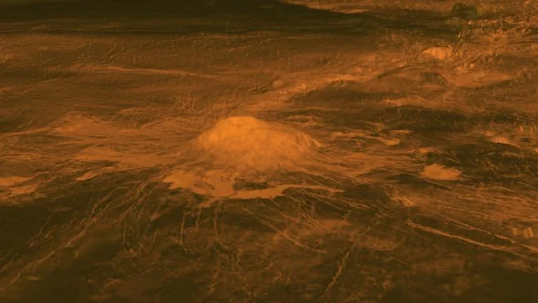

Image Gallery



Venus is the second planet from the Sun, and the
sixth largest planet.
It’s the hottest planet in our solar system.
Venus is the second planet from the Sun, and Earth's closest planetary neighbor. Venus is the third brightest object in the sky after the Sun and Moon. Venus spins slowly in the opposite direction from most planets. Venus is similar in structure and size to Earth, and is sometimes called Earth's evil twin. Its thick atmosphere traps heat in a runaway greenhouse effect, making it the hottest planet in our solar system with surface temperatures hot enough to melt lead. Below the dense, persistent clouds, the surface has volcanoes and deformed mountains.
Venus orbits the Sun from an average distance of 67 million miles (108 million kilometers), or 0.72 astronomical units. One astronomical unit (abbreviated as AU), is the distance from the Sun to Earth. From this distance, it takes sunlight about six minutes to travel from the Sun to Venus. Earth's nearness to Venus is a matter of perspective. The planet is nearly as big around as Earth. Its diameter at its equator is about 7,521 miles (12,104 kilometers), versus 7,926 miles (12,756 kilometers) for Earth. From Earth, Venus is the brightest object in the night sky after our own Moon. The ancients, therefore, gave it great importance in their cultures, even thinking it was two objects: a morning star and an evening star. That’s where the trick of perspective comes in. Because Venus’ orbit is closer to the Sun than ours, the two of them – from our viewpoint – never stray far from each other. The ancient Egyptians and Greeks saw Venus in two guises: first in one orbital position (seen in the morning), then another (your “evening” Venus), just at different times of the year. At its nearest to Earth, Venus is about 24 million (about 38 million kilometers) away. But most of the time the two planets are farther apart. The maximum distance between Venus and Earth is about 162 million miles (261 million kilometers). Mercury, the innermost planet, actually spends more time in Earth’s proximity than Venus. One more trick of perspective: how Venus looks through binoculars or a telescope. Keep watch over many months, and you’ll notice that Venus has phases, just like our Moon – full, half, quarter, etc. The complete cycle, however, new to full, takes 584 days, while our Moon takes just a month. And it was this perspective, the phases of Venus first observed by Galileo through his telescope, that provided the key scientific proof for the Copernican heliocentric nature of the solar system.
Venus has an average surface temperature of around 467°C (872°F), hotter than Mercury, even though it’s farther from the Sun.
Like Earth, Venus does not have rings.
Thirty miles up (about 50 kilometers) from the surface of Venus temperatures range from 86 to 158 Fahrenheit (30 to 70 Celsius). This temperature range could accommodate Earthly life, such as “extremophile” microbes. And atmospheric pressure at that height is similar to what we find on Earth’s surface. At the tops of Venus’ clouds, whipped around the planet by winds measured as high as 224 mph (360 kph), we find another transformation. Persistent, dark streaks appear. Scientists are so far unable to explain why these streaks remain stubbornly intact, even amid hurricane-force winds. They also have the odd habit of absorbing ultraviolet radiation. The most likely explanations focus on fine particles, ice crystals, or even a chemical compound called iron chloride. Although it's much less likely, another possibility considered by scientists who study astrobiology is that these streaks could be made up of microbial life, Venus-style. Astrobiologists note that ring-shaped linkages of sulfur atoms, known to exist in Venus’ atmosphere, could provide microbes with a kind of coating that would protect them from sulfuric acid. These handy chemical cloaks would also absorb potentially damaging ultraviolet light and re-radiate it as visible light. Some of the Russian Venera probes did, indeed, detect particles in Venus’ lower atmosphere about a micron in length – roughly the same size as a bacterium on Earth. None of these findings provide compelling evidence for the existence of life in Venus’ clouds. But the questions they raise, along with Venus’ vanished ocean, its violently volcanic surface, and its hellish history, make a compelling case for missions to investigate our temperamental sister planet. There is much, it would seem, that she can teach us..
Venus has no moons, which is unique among the inner planets alongside Mercury.
A critical question for scientists who search for life among the stars: How do habitable planets get their start? The close similarities of early Venus and Earth, and their very different fates, provide a kind of test case for scientists who study planet formation. Similar size, similar interior structure, both harboring oceans in their younger days. Yet one is now an inferno, while the other is the only known world to host abundant life. The factors that set these planets on almost opposite paths began, most likely, in the swirling disk of gas and dust from which they were born. Somehow, 4.6 billion years ago that disk around our Sun accreted, cooled, and settled into the planets we know today. Better knowledge of the formation history of Venus could help us better understand Earth – and rocky planets around other stars..
Venus has a thick, toxic atmosphere composed mostly of carbon dioxide, with clouds of sulfuric acid. This dense atmosphere creates a greenhouse effect, making it the hottest planet in our solar system.
Mercury's surface is rocky, cratered, and features extensive plains and ridges. It also has “scarps,” which are cliff-like formations caused by the planet shrinking as it cooled.
If we could slice Venus and Earth in half, pole to pole, and place them side by side, they would look remarkably similar. Each planet has an iron core enveloped by a hot-rock mantle; the thinnest of skins forms a rocky, exterior crust. On both planets, this thin skin changes form and sometimes erupts into volcanoes in response to the ebb and flow of heat and pressure deep beneath. On Earth, the slow movement of continents over thousands and millions of years reshapes the surface, a process known as “plate tectonics.” Something similar might have happened on Venus early in its history. Today a key element of this process could be operating: subduction, or the sliding of one continental “plate” beneath another, which can also trigger volcanoes. Subduction is believed to be the first step in creating plate tectonics. NASA’s Magellan spacecraft, which ended a five-year mission to Venus in 1994, mapped the broiling surface using radar. Magellan saw a land of extreme volcanism – a relatively young surface, one recently reshaped (in geologic terms), and chains of towering mountains.